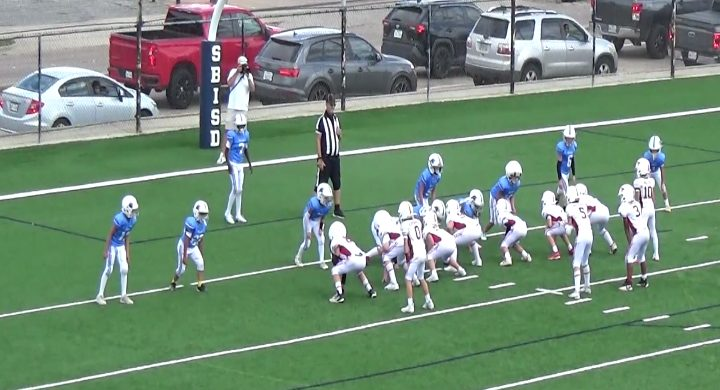
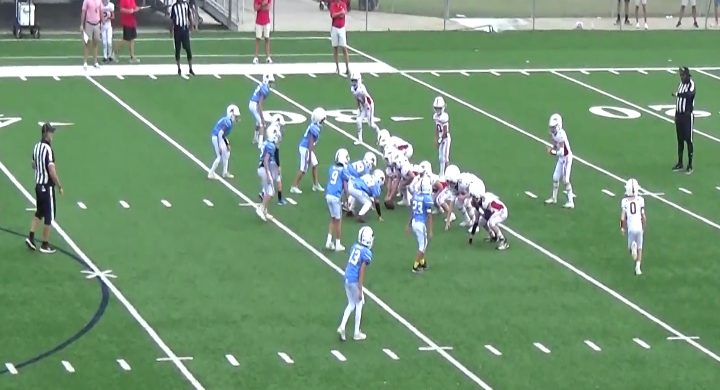
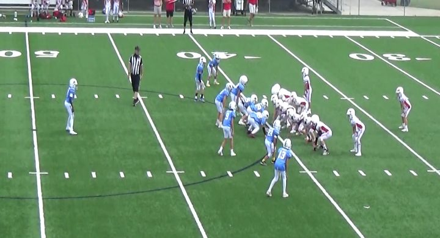
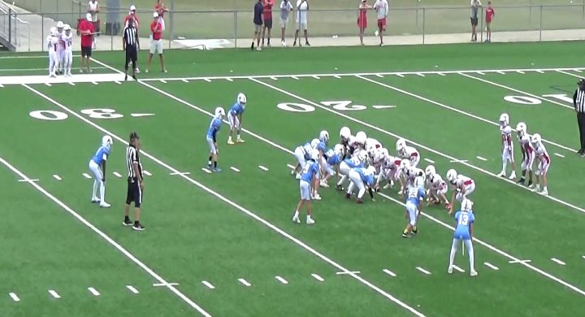
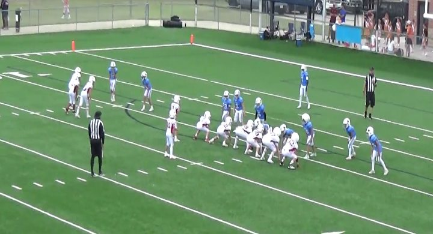
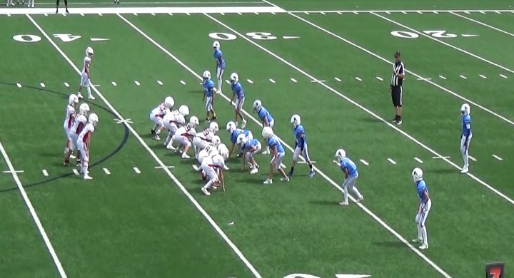

No WR means run. WRs out means pass.
Zero or one receiver split out: run, 12 for 12. Two or three out: pass, 6 for 7. Their straight drop-back passing went 0 for 4.
prepared by Mr. Wang from Mustangs vs Green Wave, October 3, 2026
The Mustangs use more formations than anyone we have scouted and like to throw, but the formation gives the play away. Shotgun with zero or one WR: run, 12 of 12. Two or three WRs: pass, 6 of 7. Under center with one back: play action, 4 of 4. Three backs: inside run, 3 of 3.
Zero or one receiver split out: run, 12 for 12. Two or three out: pass, 6 for 7. Their straight drop-back passing went 0 for 4.
One back behind the quarterback: play action every time, and 3 of the 4 went for 10 yards or more. Safeties stay deep. Three backs: an inside run every time, stopped at 0.7 yards a carry. Linebackers fill fast.
Both times they lined up in trips it was a screen to the receivers, and one went for a touchdown. The corner and outside linebacker on that side attack the receiver the moment the ball comes out.
Six looks, ordered by how often they used them. The boards are drawn from the personnel; the film frame beside each one shows how they really lined up.
10 of their 26 plays: 10 run. Averaging 4.5 yards.

| Call | Times | Avg yds | TD |
|---|---|---|---|
| HB Off Tackle | 4 | 8.5 | 1 |
| QB Off Tackle | 3 | -1.0 | |
| HB Sweep | 1 | 2.0 | |
| QB Sweep | 1 | 10.0 | |
| QB Iso | 1 | 2.0 |
Each call name opens a clip of it: the snap that scored, or failing that the one that gained most.
5 of their 26 plays: 4 pass, 1 run. Sometimes twins (3), sometimes split (2). Averaging 2.4 yards.

| Call | Times | Avg yds | TD |
|---|---|---|---|
| QB Quick Pass Right | 2 | 0.0 | |
| QB Deep Pass | 1 | 0.0 | |
| QB Off Tackle | 1 | 12.0 | |
| QB Deep Pass Left | 1 | 0.0 |
Each call name opens a clip of it: the snap that scored, or failing that the one that gained most.
4 of their 26 plays: 4 play action. Averaging 13.8 yards.

| Call | Times | Avg yds | TD |
|---|---|---|---|
| QB Play Action Deep Pass Right | 2 | 23.5 | |
| QB Play Action Bootleg | 2 | 4.0 |
Each call name opens a clip of it: the snap that scored, or failing that the one that gained most.
3 of their 26 plays: 3 run. Averaging 0.7 yards.

| Call | Times | Avg yds | TD |
|---|---|---|---|
| HB Off Tackle | 3 | 0.7 |
Each call name opens a clip of it: the snap that scored, or failing that the one that gained most.
2 of their 26 plays: 2 pass. Averaging 11.0 yards.

| Call | Times | Avg yds | TD |
|---|---|---|---|
| WR Screen | 2 | 11.0 | 1 |
Each call name opens a clip of it: the snap that scored, or failing that the one that gained most.
2 of their 26 plays: 2 run. Averaging 12.5 yards.

| Call | Times | Avg yds | TD |
|---|---|---|---|
| QB Off Tackle Strong | 2 | 12.5 |
Each call name opens a clip of it: the snap that scored, or failing that the one that gained most.
Number 5 handled it on 12 of their 26 plays, as the quarterback taking the snap and running or throwing.
| Jersey | Touches | Avg yds | TD |
|---|---|---|---|
| #5 | 12 | 6.5 | |
| #3 | 6 | 6.2 | 1 |
| #0 | 4 | 2.2 | |
| #10 | 2 | 10.5 |
Practice the calls: “No receivers, run!” “One back, play action!” “Trips, screen!”
The Mustangs wear white with red trim. Green Wave wear Columbia blue.
Under center with one back. The fake pulls the linebackers up and the deep throw goes over them.
Three receivers to one side, and the ball goes straight out to them.
Their main formation, 10 yards. Nobody split out, so it is a run. Watch who gets the snap: the halfback takes it and runs left behind the quarterback.
Under center with three backs. The handoff goes to the back on the far left, and the other two lead him to the right.
30 offensive snaps from the chart. 3 bad snaps are set aside from the tendencies: play 25 (-7 yards), play 32 (-10 yards), play 33 (-10 yards). Their center-quarterback exchange is worth pressuring.
| Play | Family | Formation | Play | Ball | Result | |
|---|---|---|---|---|---|---|
| 22 | Under center, 3 backs | 2TE, 3 Backs | Handoff Off Tackle Right | #0 | 4 Yards | |
| 23 | Shotgun, No WR | Shotgun 2TE 2WB, WB Motion Left | HB #3 Direct Snap Sweep Left | #3 | 2 yards | |
| 24 | Shotgun 2 WR | Shotgun 1TE 2WB, 2 WR Right | QB #5 roll right, Short pass to TE #82 | #5 | incomplete | |
| 25 | Shotgun 2 WR | Shotgun 2TE 2WR Balanced | bad snap | #5 | -7 yards | set aside |
| 32 | Shotgun, No WR | Shotgun 2TE 2WB, WB Motion Right | bad snap | #5 | -10 yards | set aside |
| 33 | Shotgun 2 WR | Shotgun 2TE 2WR Balanced | bad snap | #5 | -10 yards | set aside |
| 34 | Shotgun 2 WR | Shotgun 2TE 2WR Balanced | QB #5 deep pass right to WR#2 | #5 | incomplete | |
| 35 | Shotgun 3 WR Trips | Shotgun 2TE WR Trips | WR #3 Screen | #5 | false start | |
| 36 | Shotgun 2 WR | Shotgun 1TE 2WB, 2 WR Right | QB #5 short pass right to TE #82 | incomplete | ||
| 41 | Under center, single back | 2TE 2WB 1HB | Play Action Deep Pass right to TE #4 | #5 | 30 yards | |
| 42 | Shotgun, No WR | Shotgun 2TE 2WB, Overload Right | QB #10 Sweep Right | #10 | 10 yards | |
| 43 | Under center, 3 backs | 2TE, 3 Backs | HB #0 Off Tackle Right | #0 | no gain | |
| 44 | Shotgun, No WR | Shotgun 2TE 2WB | HB #3 Direct Off Tackle Left | #3 | 10 yards | |
| 45 | Shotgun, No WR | Shotgun 2TE 2WB | QB #5 Off tackle right | #5 | 2 yards | |
| 46 | Shotgun, No WR | Shotgun 2TE 2WB | QB #5 Iso Left | #5 | 2 yards | |
| 47 | Shotgun, No WR | Shotgun 2TE 2WB | HB #3 direct snap off tackle left | #3 | 2 yards TD | |
| 48 | Shotgun, No WR | Shotgun 2TE 2WB | QB #5 Off tackle right | #5 | 2 yards XP Good | extra point |
| 55 | Shotgun, No WR | Shotgun 2TE 2WB | HB #0 Direct Off Tackle Left | #0 | 7 yards | |
| 56 | Under center, single back | 2TE 2WB 1HB | QB #10 play action bootleg | #10 | 11 yards | |
| 57 | Under center, single back | 2TE 2WB 1HB | QB #5 play action bootleg pass deep right to TE #4 | #5 | 17 yards | |
| 58 | Shotgun 2 WR | Shotgun 2TE 2WR Balanced | QB #5 fake jet sweep off tackle left | #5 | 12 yards | |
| 60 | Shotgun, No WR | Shotgun 2TE 2WB | QB #3 Off tackle left | #3 | -2 yards | |
| 61 | Shotgun 2 WR | Shotgun 2TE 1WB 2WR Twins Left | QB #5 deep pass left to WR #4 | #5 | incomplete | |
| 76 | Shotgun, No WR | Shotgun 2TE 2WB, WB Motion Right | HB #3 Off tackle right | #3 | 15 yards | |
| 79 | Shotgun, 1 WR | Shotgun 2TE 2RB 1WR | QB #5 off tackle left | #5 | 15 yards | |
| 80 | Under center, single back | 2TE 2WB 1HB | Play Action QB#5 Bootleg | #5 | -3 yards sack | |
| 81 | Shotgun, 1 WR | Shotgun 2TE 1WB 1WR | QB #3 off tackle left | #3 | 10 yards | |
| 88 | Shotgun, No WR | Shotgun 2TE 2WB, WB motion right | QB #5 off tackle right | #5 | -3 yards | |
| 89 | Under center, 3 backs | 2TE, 3 Backs | HB #0 Off tackle right | #0 | -2 yards | |
| 91 | Shotgun 3 WR Trips | Shotgun 2TE WR Trips | WR #3 Screen | 11 yards TD |